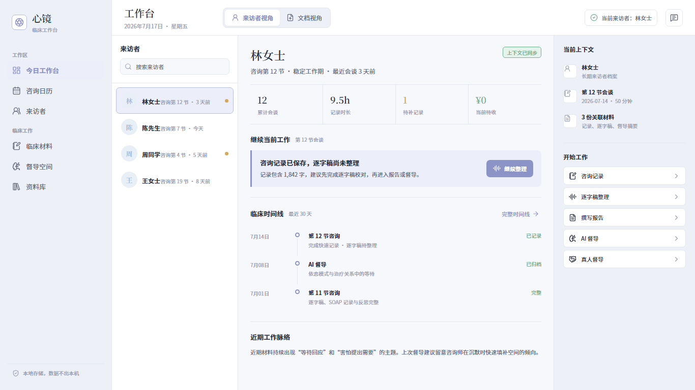

v4.1.0 全新发布
让每一次会谈，
让每一次会谈，
都回到同一条个案脉络里。
心镜为心理咨询师整理日程、记录、逐字稿、报告、督导、资料库与账务。先把日常工作放在一起，再决定何时需要 AI 的协助。
默认本地存储。Windows 与 macOS 均支持；AI 功能需单独配置可用算力与相应权益。

下载心镜 v4.1.0
选择适合你系统的安装包
所有安装包均托管于腾讯云对象存储，点击即开始下载。安装与运行均不需要联网账号，资料默认保存在你自己的电脑中。
Windows 安装版
推荐大多数用户 · 自动更新
xinjing-setup-4.1.0.exe
双击安装，开始菜单与卸载入口齐全；后续版本将自动提示更新。
Windows 便携版
免安装 · 放 U 盘即用
xinjing-portable-4.1.0.exe
无需管理员权限，解压即运行；适合在机构电脑或临时环境使用。
macOS 磁盘镜像
首次安装推荐 · .dmg
xinjing-4.1.0.dmg
因未购买 Apple 开发者证书，首次打开需在「系统设置 → 隐私与安全性」中允许，或用右键「打开」绕过 Gatekeeper。
macOS 压缩包
自动更新载体 · .zip
xinjing-4.1.0.zip
解压后将「心镜 XinJing.app」拖入「应用程序」；Mac 端自动更新将下载此包。
v4.1.0 重点能力
更少断裂，更多留在个案本身
两套工作台视角与一类新的临床材料工作项，让「先处理、后归档」更自然；其余能力在既往版本中已经稳定可用。
双视角工作台
来访者视角与文档视角随时切换，并自动记住你上次停留的视角，进入软件即回到当时的工作现场。
临床材料工作项
导入逐字稿或文档后先进入材料工作区整理，再显式关联来访者与节次；仅保存安全元数据与解析文本，路径零泄漏。
本地优先
临床与账务资料默认保留在你的电脑中，支持导出、恢复与智能增量备份，长期资料可恢复。
AI 边界清晰
AI 是整理、分析与督导的协作入口，不替代临床判断。权益与算力分别检查，不让「已开通」误当成「当前可用」。
围绕个案
从来访者、节次到材料，一条可追溯的工作线，减少在页面之间反复寻找上下文的消耗。
账务与备份
管理收支、月结与应收；智能增量备份仅在数据变化时写入「最新」目录，不再产生数 GB 冗余。
一条连续的工作线
不是把工具摆成一排，而是让下一步自然出现
1安排查看今天与本周会谈
2来访者进入持续的个案上下文
3记录快速或结构化记录会谈
4材料整理逐字稿与临床材料
5报告基于已有节次组织内容
6督导进入 AI 或真人督导
为真实执业节奏而设计
适合需要长期维护个案脉络的专业工作者
个体咨询师
需要同时处理排期、会谈记录、逐字稿、收款与下次工作的咨询师。
受训与成长中的咨询师
希望把督导材料、反思与不同阶段的个案资料保留在可回看的工作线上。
小型咨询工作室
重视本地资料管理、清晰的来访者归属与可导出的个人工作记录。
更新日志
最近版本
v4.1.0 最新
- 双视角工作台：来访者视角 / 文档视角，视角选择持久化。
- 临床材料工作项：导入 TXT / MD / DOCX 先整理，再关联来访者与节次；路径零泄漏、20MB / 100 万字上限。
- 四类专业页（真人督导 / 报告 / AI 督导 / 逐字稿）接入材料上下文并回写处理状态。
- 智能增量备份升级；会员权益配额按档位区分。
v4.0.4
- 首个完整 Win + Mac 发布，复用已验证的 4.0.3 代码并补齐 Mac CI 推送。
v4.0.3
- 活跃来访者上下文、快捷入口拖拽、侧栏折叠组、退出确认框放大、账单重构。
v4.0.0
- 三档会员体系（免费 / 会员 / 旗舰）+ 统一 token 驱动设计语言（临床 / 安静剧场 / 夜间观测三皮肤）。